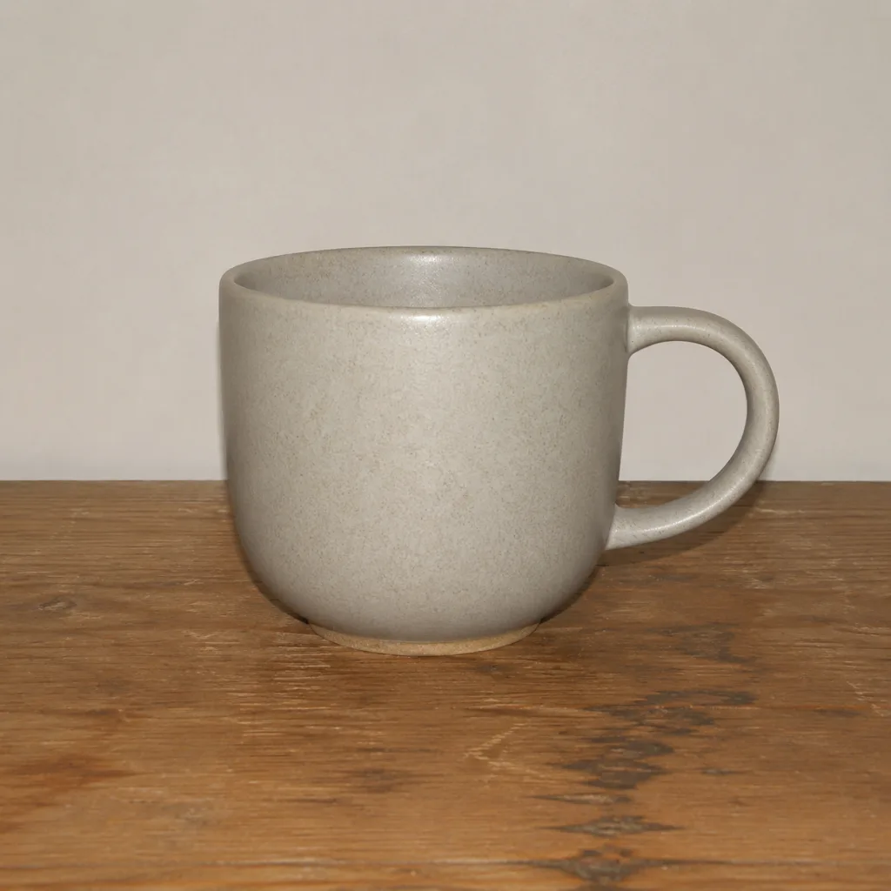
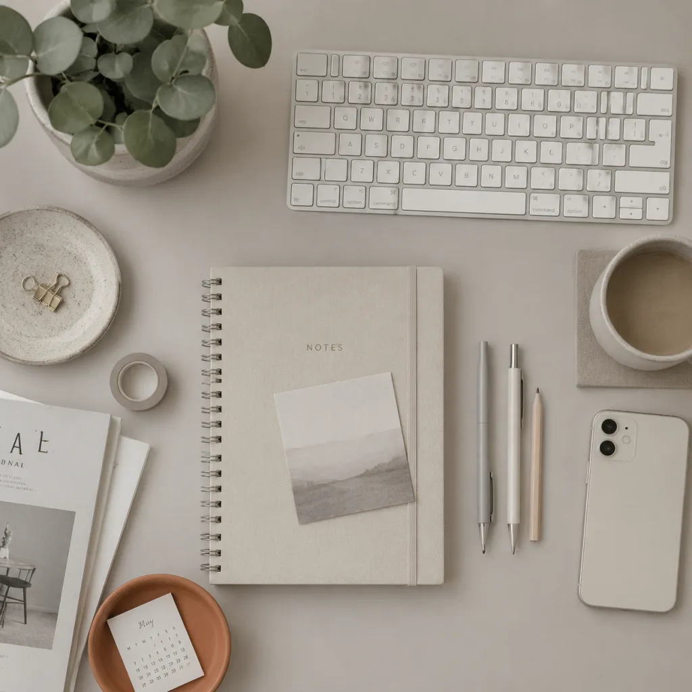
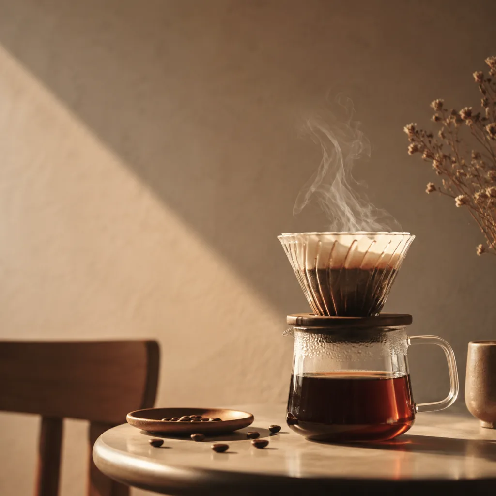

生圖：構圖、光影、色彩的語言
生圖和生 UI 同一個道理：詞彙量決定產出。構圖、光影、色彩三件套，每樣記三個詞；先用三組真圖練眼力，再拼一段能直接用的生圖提示詞。
你説「一張好看的咖啡海報」，AI 給你訓練數據的平均值；你説「三分法構圖、黃金時刻側逆光、低飽和莫蘭迪色調」，AI 立刻有了施工圖。攝影師練了一百年的語言現成擺在那裏，拿來就能用。審美三件套：構圖管主體站位，光影管立體感，色彩管情緒。每樣記住三個詞，夠用了。下面的練習都做成兩張並排，這是信息設計師 Tufte 的老辦法：對比產生情境，好壞擺在一起才看得出來。





信息設計的老前輩 Edward Tufte 在《The Visual Display of Quantitative Information》裏留了七條原則，About Face 4 第 17 章把它們搬進了介面設計。其中兩條正好解釋這一頁的玩法。
第一條，加強視覺對比，對比產生情境。單獨看一張燈塔照，你説不準構圖好壞；兩張並排，三分法和死板居中立刻分出高下。前面三局你答得那麼快，靠的就是對比把差異放大了。這也解釋了為什麼好構圖和好光影總是「一眼能看出來」：眼睛天生是台對比機器，缺的只是並排的機會。
第二條，在相鄰空間上並排顯示，優於按時間堆積。一張張翻着看，比較靠短時記憶，翻到第四張，第一張長什麼樣已經記不清了；並排擺開，比較靠眼睛。所以讓 AI 出候選圖，別看一張刪一張，攢齊了並排看。
不信並排更快？拿前三局的六張圖試一場。任務：把「黃金時刻側逆光」那張找出來。先用輪播翻着找，再切並排看一遍，感受兩種看法的差距。
三局練完，上真實工作場景：你讓 AI 給咖啡品牌出了四張海報候選，客戶明天要。用剛學的三件套挑一張交稿。注意這裏的姿勢：四張並排擺開再挑，用的就是 Tufte 那招相鄰空間對比。




三件套各挑一塊，拼出來的就是能直接發給生圖模型的提示詞。主體描述換成你自己的場景就能用。
審美三件套指揮生圖：構圖管站位，光影管立體感，色彩管情緒，每樣記三個詞。
挑圖和生圖吃同一套詞彙：説得出「三分法」「側逆光」「低飽和」，四選一就有依據，交稿不靠運氣。
候選圖要並排看：對比產生情境，相鄰空間擺開優於一張張翻，Tufte 這兩條原則就是本頁方法論的底座。
下次生圖把構圖、光影、色彩三行寫全再發；出圖不對時，按這三行逐項排查是哪行沒説清。
內容來源：小山學堂「審美工程」專題原創；本頁示意圖由 GPT Image 2 生成；部分設計原則整理自《About Face 4：交互設計精髓》第 17 章。